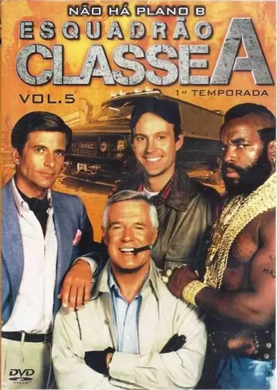
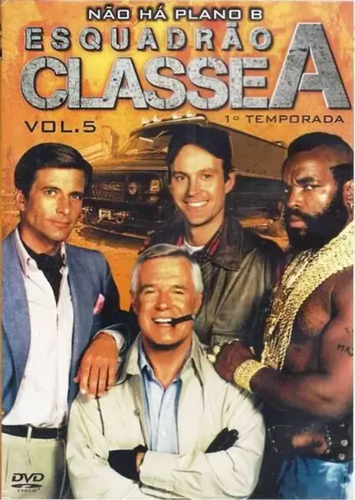
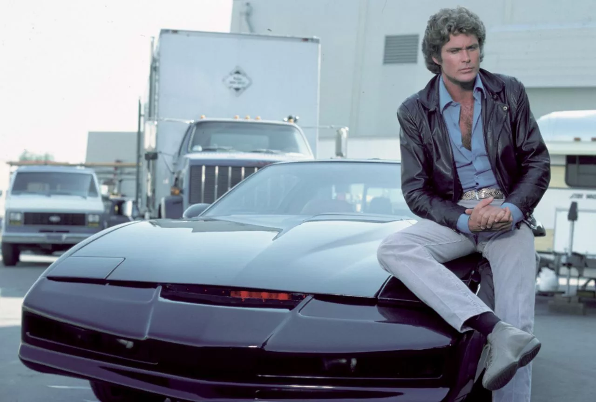
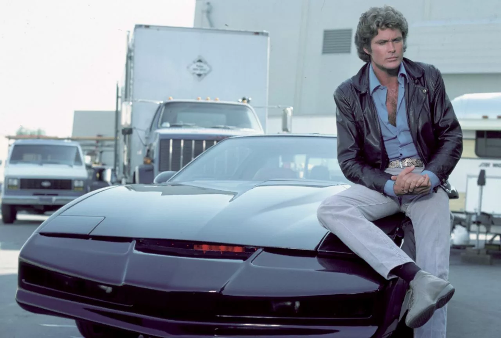

Bem Vindo ao nosso site sobre os filmes do anos 80
Toda uma geracao cresceu amando as series dos anos 80.
As series dos anos 80 eram insanas, vistas em retrospectiva, mas a gente adorava. Até por falta de alternativa. Hoje as novas gerações não sabem o mundo maravilhoso que as cerca, repleto de opções, séries com altíssima qualidade de produção e roteiro, TVs 4K, streaming, etc. Vamos então mostrar aos millenials os fatos da vida, as séries dos anos 80 que a gente adorava, ainda adora, mas reconhece que eram... complicadas. Ah, os anos 80! A década que a cultura pop não deixa morrer está sempre em voga em nossos corações. Esta época é tão especial que até mesmo os que não viveram nela a celebram como se pertencentes, tendo a memória reativada através de programas de TV, filmes, peças de merchandising e as mais variadas mídias. É por essas e outras que os anos 80 são agora! Não foram embora e jamais irão. Entre inúmeras outras coisas, porque para a cultura pop foi a consolidação dos blockbusters e dos produtos de entretenimento que transcendiam as telas para o nosso dia a dia. Os filmes mais queridos quando falamos da mais pura diversão saíram desta década. Mas os anos 80 não marcaram apenas no cinema. E a Televisão também atingia picos de popularidade, com programas eternos que jamais esqueceremos. Para mergulhar fundo de cabeça nesta nostalgia, vamos lembrar agora com você as séries de ação mais queridas da década de 80. Graças a Stranger Things e também a uma infinidade de remakes produzidos pela televisão e pelo cinema, os anos 1980 voltaram a povoar o imaginário dos mais saudosos e até daqueles que nem na década nasceram, mas se identificam com um estilo que continha muito colorido, dramas familiares, séries policiais, invasão de heróis japoneses e casais marcantes. Além disso, houve um considerável aumento de produções nacionais, com séries de imenso sucesso de público e crítica, como Armação Ilimitada e O Bem Amado. Infelizmente, todas elas eram obrigadas a enfrentar a tensa censura federal, que picotava sem dó as narrativas de diversas séries e novelas. E se os norte-americanos tinham o privilégio de assistir às séries assim que elas iam ao ar, os brasileiros precisavam esperar um, dois, até três anos para conhecer uma história nova ou saber o que teria acontecido com determinado personagens. Isso porque as emissoras demoravam anos para obter os direitos de exibição, além de levar mais um bom tempo para dublar toda a temporada. Ao mesmo tempo, não existia internet, VHS e a televisão a cabo nem sonhava em ser popular. O amaldiçoado e odiado spoiler, então, não fazia parte do vocabulário brasileiro. Por isso, para relembrar a (talvez) década mais saudosa de todas as décadas, a coluna OLHO NA TV selecionou 5 produções das mais queridas daqueles tempo, até aquelas esquecidas no fundo de memória, mas que marcaram uma geração. Muitas produções dos anos 80 são faladas até hoje, décadas depois. Algumas pelo cunho inovador, outras por histórias cativantes. Mas seja lá como for, o fato é que essa década foi marcante na história das séries de televisão e nós vamos provar!  

 
